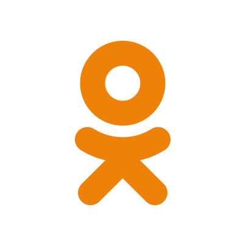

Blog
Different blogs from different user

Pros And Cons Of Social Media!

How to improve your website for better Google ranking!

Contact Us
Pros And Cons Of Social Media!
These days social media is affecting in every aspect of our lives and business It's crazy that we get easily carried away on social media with the attention and interactions Social media has brought some very important positive effects in many areas such as employment and empowering, connecting sharing their minds and much more however at the same time, it also becomes the breeding ground for some destructive and unhealthy behaviors.
1) It Makes Us Stay Connected
The main purpose of all the social media sites out there has some kind of mission where they help connect friends and families Social media sites have help to connect with people not only your near and dear ones but also people all across the entire globe Basically, You can connect with people from all over the world just for free
2) 24/7 Availability
The internet never sleeps No matter what the time is, you can always connect, share your thoughts In times of crisis, this can truly be life-saving
The internet never sleeps No matter what the time is, you can always connect, share your thoughts In times of crisis, this can truly be life-savin
Sometimes, traditional media are just slow to catch up with the ever-changing broadcasting of news For example before even big mega news publisher like CNBC, FOX news, etc even knew about it, with social media, it can spread like wildfire Example: Breaking news, missing children, storm information, etc
4) Help Solve Crimes
This may come as a surprise but with social media, many criminals are arrested and cases were solved The criminals post a Pictures of themselves engaging in illegal activities, or even bragging about the crimes they have committed The law enforcement authority uses these sites to identify and solve cases.
5) Brand Awareness
Social Media also greatly impacts not only personally but also for business owners too By taking the social media game seriously, many companies have made possible to put their brand name out there
6) Customer Acquisition &anp; Sales
Did you know that if done right, you can make great sales just by one post on Instagram, Facebook, etc Yes, that's right. It is Possible You can also deliver an improved customer service through social media instead of long boring email
7) Lowest Cost Form Of Marketing
To be honest, marketing is literally free. No sites will charge you for promoting your business on Facebook, Instagram or Twitter Even if you want to reach a bigger audience, their ad cost is not that expensive That means the Barriers to entry are low
8) Promote Your content
People normally tend to be curious about what they are getting into before putting in their card number By having an amazing content which breaks down what the product is about and how it's gonna help step by step People are gonna be more likely to buy after reading the content But if your content remains there stagnant without promotion, it basically holds no value That is why Every business needs to have their content marketing strategy The most common being sharing on their Social Media
9) Website traffic
When people see your content or service on any of the social media sites Chances are they will be interested in your content because most of the social media sites algorithm shows content based on their interests, preferences, recent visits and much more That means your content is shown on their page because they are interested in your niche So, They are gonna probably click on it, which will lead them to your website Thus, increasing your website traffic
How to improve your website for better Google ranking!
0Online positioning of a web site, profile or an internet page is very similar to the physical positioning of an actual store. You need to invest time and funds into marketing, in order to distinguish yourself and draw attention to your business.
Imagine that you are an owner of a store, which is located in a low key street, and you do not have any advertisement, marketing, logo or sign. You may have a brilliant product, but your potential buyers have no way of being aware of you.
It is similar on the internet. Quality and originality are certainly a plus, but people have to have a way of hearing about you. Today, one of the best ways for this is to have a strong internet presence, across a wide range of social networks. Create a Facebook profile, upload a Youtube video, twitter something or upload a photo to Instagram. You can think of each like, share and view as a form of virtual currency.
One of the most important tools that can help you to reach recognition is SEO and improve Google ranking.. It is an acronym for Search Engine Optimization, of which Google is the most important. During their searches, users type in words or phrases that allow them to find what they want. Your goal is to have the best ranking possible, or, in other words, to be at the top of the list in order to make it easier for potential customers to find you. You can influence on this in several ways: basic adjustments, advanced techniques, and paid advertising. Still, the most important thing is:
Improve your website!
Meta tags
Firstly, there are meta tags, which Google recognizes as key phrases connected with your site. Meta tags are keywords, descriptions, and much more. So, for example, if you were in business of servicing air-conditioners, meta tags should relate to your area of expertise, services and special offers.
Description
Further more, a precise and clear description will go a long way of helping you – well used 160 characters can make a big difference. Recently, Google has started paying more attention to the general description over keywords, since they can be abused by constant repetition. This development was introduced in order to provide more relevant search results, by listing sites that are really connected to the searched phrase, instead of those that simply repeat the phrase infinitely. Google now pays attention to complete texts, themes and, so to say, a viable presence of key phrases and words.
Headlines and site maps
The latest development is that Google will emphasize which site is responsive, which means that it is adjusted for viewing on both mobile phones and tablet devices – but this does not mean that the site has to be mobile friendly in order to appear in search results, it just helps. Due to the extremely fast growth of usage of new and mobile devices for surfing the internet, Google ranks the sites that follow this trend higher than those that do not. If your site is not responsive, it does not mean that it cannot be viewed on a mobile device, but its functionality is limited – the site is either reduced, and zooming becomes necessary, or its size remains the same, and up-down and left-right scrolling becomes necessary to see the whole site. Responsive design introduces breaking points, places where, depending on the size of the device, the site ‘breaks’, in order to adapt more fully.
ALT tags
To summarize – optimize your website. Attractively designed, skillfully arranged, and optimized website will always achieve a higher ranking. Create a site map, and check your description and meta tags. Make your site mobile-friendly. Do not try to ‘trick’ Google, for you will be sanctioned for it. This means that you should not use fake descriptions, too many keywords, or keywords that put you in the results that are in no way connected with your business. These shortcuts can bring only short-term advantage, and long-term consequences.
PINTEREST - Know Your Social Media!
One of the most popular social website for the business users and companies, Pinterest consider itself more that Social Media network and closer to ‘world catalog of ideas’ at one place. It was launched in 2010. and, since then, constantly grows with more that 180 million registered user, and more than 110 million active users.
For those among you that do not use Pinterest – what exactly is it?
Pinterest is free to use and it requires registration. Once you became user, you can upload, save, manage, delete and sort your pins (images) as well as videos, making your own pinboards (collections). Pinboards are usually organized by a common theme. You can browse the pinboards of other users in their feed, and save those you like on your own board using the ‘Pin It’ button. With this button you can upload pictures outside of this network too, adding them to your board. With pinning items, creating pinboards and communicating with other users by sending and receiving pins, you can personalize your own ‘Pin feed’.
Pinterest and business
It can be easily seen how Pinterest could be great for business pages. Pinterest allows and supports commercial pages, and it is often used for companies to promote their brands. Studies have shown that users (of Pinterest) will spend more time on company’s pinboard then on actual website. Also, Pinterest is consider as best social media at driving sales, being more effective than Facebook. On this virtual store, companies can share information with users, from description, ratings, prices etc.
Pinterest and SEO
Like all the other big social websites, Pinterest is an important tool in your overall SEO arsenal, especially if you have business pinboard already created. You can use Pinterest to promote your brand, products and line of business and to find new and interesting items and ideas for yourself.
Get Free Flickr Faves Exchange!

Flickr is the best sharing and online photo management application in the world. It allows showing off your preferred videos and photos to the world. FlickrFaves refers to the small utility that allows downloading versions of high resolution of your flickr faves (favourites) to your hard drive. Flickr faves is written in Java and is a cross-platform utility.
There is no doubt that people are gripped with popularity and love to say things such as I get lots of views, traffic and favs. There is no doubt that everyone is delighted on receiving attention and receiving free flickr faves is an irresistible temptation, surpassing everything.
- Take great pictures. Very importantly quality matters. if you really wish to receive free flickr faves, make your stuff valuable. Use photoshop and enhance your photos such that make it worth looking at.
- One shot a day. Choose wisely and upload one shot a day. The numbers does not matter, but the quality matters. Upload the best shot. Your contacts on Flickr view the contacts photos, especially the last you have uploaded. Upload up to five shots in one upload and ensure they are the best.
- Be liberal with favs. Learn to be liberal with the photos you like on flickr and ensure to fav it. It is simple and requires mere clicking on someone’s photo featuring a little star. Receiving free flickr faves means a lot as it counts to interestingness.
- Specific time. Generally, flickr posting starts as the day comes to an end. Though specific time is not known, however posting early builds more traction for the interestingness stream to be considered. if you can post at 12:01 or a 11:59 at night.
- Pass information. Inform your known circle, your family, friends, relatives, co-workers and also good strangers, you know about Flickr. Try to hook them and you will find them commenting regularly on your photos and enjoy free flickr faves.
- Ensure contacts. Make sure you contact every contact back. It is a polite gesture and ensures you see your work and theirs. There is a mechanism that distinguishes family/friends and other contacts and filters accordingly. You must contact them by appreciating their photo. This ensures you retain contacts.
Acquiring free flickr faves means staying online, appreciating others photos with faves and encouraging your friends photo blogs. post group photos, tag them and you will not go unnoticed.
Like4Like.org Flickr Exchange Features
- Flickr Faves Exchange
Get Free Twitch Followers Exchange!

Twitchstarter is the name of the online community that assists you in getting extra followers and viewers. Professional to new gamers of all ages use Twitch as it makes streaming better. There are cool tools, blogs, forums and websites that Twitch gamers and streamers can get going.
Twitchstarter has a tool known as ‘Followers Club’ and using this tool you can avail free Twitch followers. This is a simple system that is follow for follow exchange. It means, you follow 10 people a day and in exchange you receive 10 followers new.
The free Twitch followers program guarantees of getting every month 300 followers. Nevertheless you must spare valuable 5 minutes of your each day and dedicate it to follow 10 new followers every day.
What is the catch?
A common aspect is that people follow and un-follow to the extent that your follower’s numbers go really less. It is important to have Twitch followers and concurrent viewers. This increases the viewership and is also a boost for you that you are worth someone that people consider worth following. Yet, if you find the followers numbers are less, take some time to follow 10 people and get free Twitch followers more in numbers. The more the followers, the better is the feel and it promotes your confidence level.
Advantages of free Twitch followers
- Getting free Twitch followers using the exchange system helps you avoid frustration and burn-out and you overcome all the stumbling blocks.
- Streaming is a prominent activity that everyday thousands of people initiate streaming. Playing a game alone is not enough, there is a need to go beyond that and grow, while the truth stays that growing takes effort and time in lots.
Free Twitch followers are a must, but just having the follower’s numbers is not enough, if they are zero viewers. There is a need to have followers and active viewers at least to 1: 10 ratio. This indicates growth on Twitch.
- Using Viewbots: They may be anonymous viewers or dummy accounts. If so, Twitch will ban and there are possibilities that your account gets closed.
- Paying websites: Growing by paying is not effective.
Ideal ways of growing
- Demonstrate you can be a good community member.
- Ask your regular viewers to support and get streaming
- Host known people and let them know the stream link in your chat
Like4Like.org Twitch Exchange Features
- Twitch Followers Exchange
Get Free Odnoklassniki (OK.ru) Joins Exchange!
OK.ru is the Odnoklassniki social network official app. This is a Russian social network identical to Facebook, mainly used in the ex-soviet republics such as Moldavia, Armenia and Georgia. OK.ru allows free OK.ru joins and you can enjoy uploading pictures and videos, publish on others walls, chat with other users, in fact enjoy sake Facebook experience.
OK.ru is available only in Russia and is of paramount use to have contacts or friends in Russia and its satellite countries. Here you can find other people’s upload contents easily. Free OK.ru joins is appreciated for its:
Application Features
The OK.ru has interesting features such as the application does not ask your data each time. Moreover, the registration is only a three-step process. on registering, you have the access to enjoy full functionality and you can search your old and new friends, relatives, chat, share and exchange photos, comment and rate your friends, change status and a lot more.
- Upload ability and photos edit
- Free calls
- Upload ability and watch video
- Listen to music
- Comment on posts, join groups
- Add and Search friends
OK.ru description
OK.ru is same as Facebook is now well known. It offers a customizable profile allowing you to upload videos and pictures. The design is a toolbar on the left side of the screen allowing the user to access group pages or a robust music section, and also other Odnoklassniki parts. One thing is true, that though the language lists as English, many of the app parts are in Russian.
Clicking download takes you to the iTunes App Store and from here you may download Free OK.ru joins and install the app. it has a large user base, the design is intuitive and there are minimal ads. This is the right place to find exciting and interesting features with OK.ru app:
- Contact your friends cost-free
- Watch or load trending videos
- Discover your friends musical tastes and listen to your favorite music
- Share emotions through various gifts
- Stay updated with your groups and enjoy participating in discussions
- Rate photos, play games, receive rewards, comment on topics and posts
Like4Like.org OK.ru Exchange Features
- OK.ru Joins Exchange